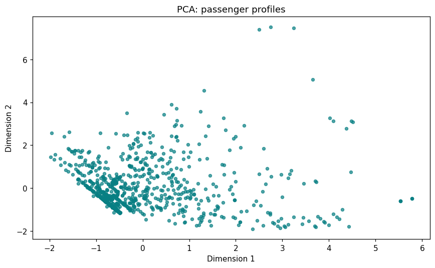
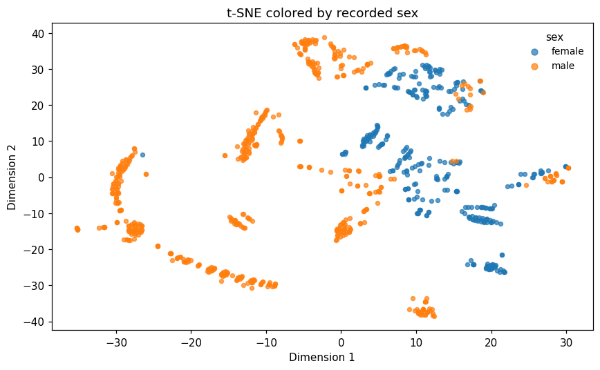
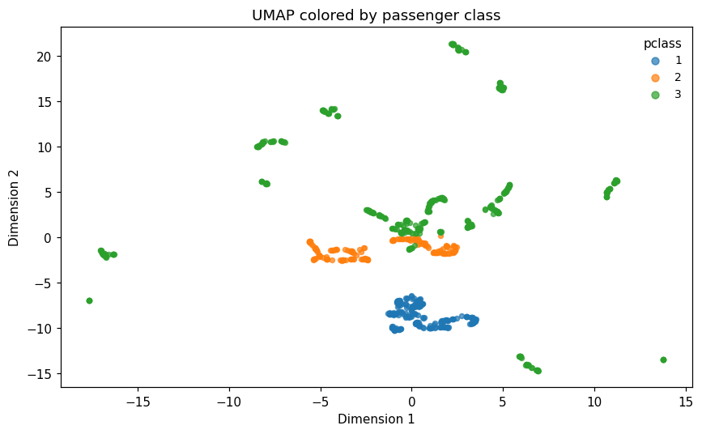
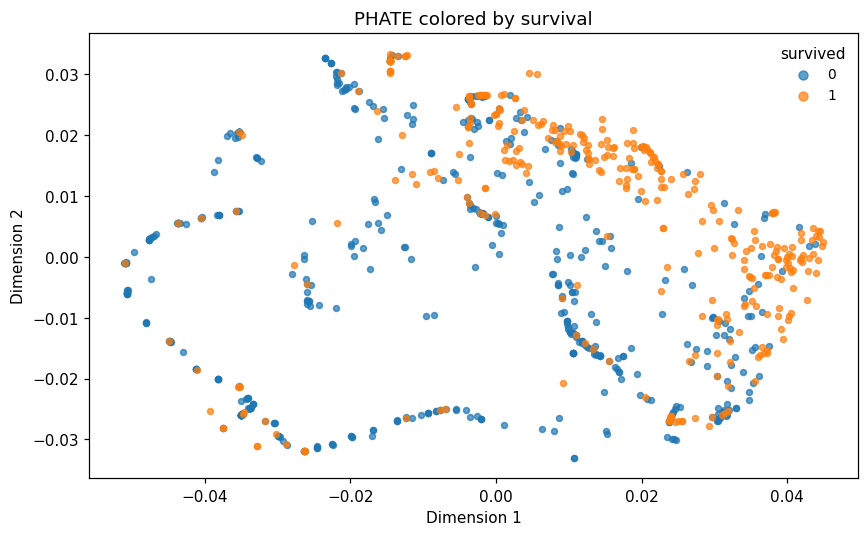
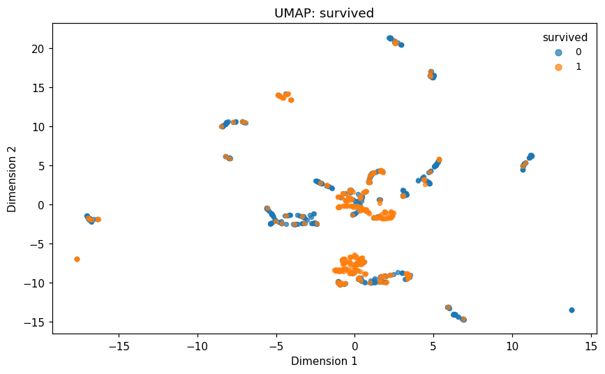
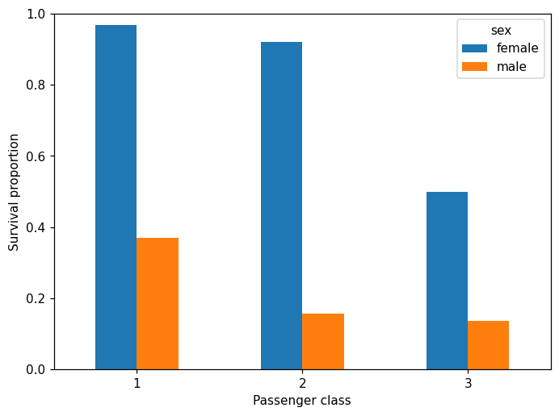
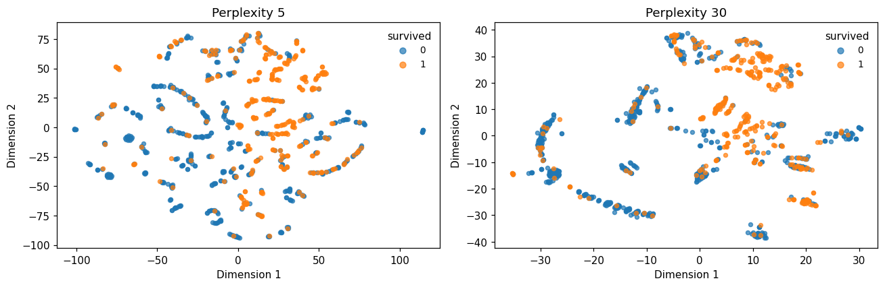

from pathlib import Pathimport sysimport numpy as npimport pandas as pdimport matplotlib.pyplot as pltfrom sklearn.decomposition import PCAfrom sklearn.manifold import TSNEROOT = Path.cwd()if not (ROOT / "support/eda_helpers.py").exists(): ROOT = ROOT.parentsys.path.insert(0, str(ROOT / "support"))from eda_helpers import prepare_titanic, prepare_tornadoes, load_saved, load_variant, plot_embedding# False uses supplied runs and requires only the base environment.# True recomputes nonlinear methods. First run: uv sync --extra recomputeRECOMPUTE = FalseTitanic dimensionality reduction: Completed reference
Question: What profiles appear across passenger characteristics, and how do they relate to survival?
All application code is supplied. Saved runs make this notebook immediate to use; switch RECOMPUTE to True to fit nonlinear methods yourself.
The main live path is preparation, one fit_transform call per method, recoloring, and a return to original variables. The SVD and parameter sections are optional follow-up.
Saved-run provenance: PCA and t-SNE use scikit-learn, PHATE uses its Python implementation, and UMAP uses the official UMAP-js implementation. The Python UMAP recomputation branch uses umap-learn and was not executable in the authoring environment. The two implementations can produce different layouts. See run details.
SetupRun before class. The four saved runs are already computed for the bundled data. Install the recompute extra before using UMAP or PHATE fitting code.
Prepared features and plotting metadataThe supplied preparation function imputes numerical fields by the median, standardizes them, and imputes/one-hot encodes categorical fields. It retains all 891 passengers. Open support/eda_helpers.py to inspect the full pipeline.| Embedding inputs | Preparation ||—|—|| age, fare, sibsp, parch | Median imputation, then z-scores || pclass, sex, embarked | Most-frequent imputation, then one-hot encoding || survived | Excluded from inputs, retained for color || Missingness indicators | Excluded from inputs, retained for color |The numerical block and each categorical block contribute differently to Euclidean distances. This is one explicit definition of passenger similarity, not an automatically optimal choice.
df, X, feature_names, preprocessor = prepare_titanic(ROOT)embeddings = {} if RECOMPUTE else load_saved(ROOT, "titanic", X, df["row_id"])print("Prepared matrix:", X.shape)print("Feature columns:", feature_names)assert "survived" not in feature_namesdf[["row_id", "age", "fare", "pclass", "sex", "survived"]].head()Prepared matrix: (891, 12)
Feature columns: ['age', 'fare', 'sibsp', 'parch', 'pclass_1', 'pclass_2', 'pclass_3', 'sex_female', 'sex_male', 'embarked_C', 'embarked_Q', 'embarked_S']| row_id | age | fare | pclass | sex | survived | |
|---|---|---|---|---|---|---|
| 0 | 0 | 22.0 | 7.2500 | 3 | male | 0 |
| 1 | 1 | 38.0 | 71.2833 | 1 | female | 1 |
| 2 | 2 | 26.0 | 7.9250 | 3 | female | 1 |
| 3 | 3 | 35.0 | 53.1000 | 1 | female | 1 |
| 4 | 4 | 35.0 | 8.0500 | 3 | male | 0 |
PCA: a linear baselineBefore running: what kind of information does this method prioritize?
pca = PCA(n_components=2, svd_solver="full")embeddings["PCA"] = pca.fit_transform(X)print("Variance retained:", pca.explained_variance_ratio_.sum())plot_embedding(embeddings["PCA"], df, title="PCA: passenger profiles")plt.tight_layout()plt.show()Variance retained: 0.5376632912409538
Interpretation: PCA returns a coordinate for each passenger on each retained component. The first two retain about 53.8% of the variance of these prepared features. Variance is not a measure of relevance to survival.
t-SNE: neighborhood similaritiesBefore running: what kind of information does this method prioritize?
if RECOMPUTE: tsne = TSNE(n_components=2, perplexity=30, init="pca", learning_rate="auto", max_iter=1000, random_state=42) embeddings["t-SNE"] = tsne.fit_transform(X)plot_embedding(embeddings["t-SNE"], df, "sex", "t-SNE colored by recorded sex")plt.tight_layout()plt.show()
Interpretation: Nearby points represent a neighborhood-based view of similarity. Inter-island spacing, island area, and point density do not provide faithful measurements of the original feature space.
UMAP: a neighborhood graphBefore running: what kind of information does this method prioritize?
if RECOMPUTE: import umap reducer = umap.UMAP(n_components=2, n_neighbors=15, min_dist=0.1, metric="euclidean", random_state=42) embeddings["UMAP"] = reducer.fit_transform(X)plot_embedding(embeddings["UMAP"], df, "pclass", "UMAP colored by passenger class")plt.tight_layout()plt.show()
Interpretation: n_neighbors controls the scale of neighborhoods used to build the graph. min_dist influences how tightly the layout packs points. Neither parameter certifies that visible islands are distinct populations.
PHATE: diffusion and broader structureBefore running: what kind of information does this method prioritize?
if RECOMPUTE: import phate reducer = phate.PHATE(n_components=2, knn=30, t="auto", mds_solver="smacof", random_state=42, n_jobs=1, verbose=0) embeddings["PHATE"] = reducer.fit_transform(X)plot_embedding(embeddings["PHATE"], df, "survived", "PHATE colored by survival")plt.tight_layout()plt.show()
Interpretation: PHATE compares diffusion profiles on a graph before producing a low-dimensional layout. This can help inspect continuous structure. Diffusion steps are not elapsed time, and a branch does not establish a passenger trajectory. We use knn=30 because repeated feature profiles occur in this dataset, retain all passengers, and add no jitter.
Recolor the same coordinatesChoose a method and a variable, then rerun this cell. Recoloring does not refit the embedding. Compare an input feature, a missingness indicator, and survival, which was withheld.Options: sex, pclass, age, fare, age_is_missing, embarked_is_missing, survived.
METHOD = "UMAP"COLOR_BY = "survived"plot_embedding(embeddings[METHOD], df, COLOR_BY, f"{METHOD}: {COLOR_BY}")plt.tight_layout()plt.show()
A pattern becomes another questionDoes apparent survival separation simply reflect passenger class and sex? Return to the original variables and compare proportions with explicit denominators.
comparison = df.groupby(["pclass", "sex"])["survived"].agg( passengers="size", survivors="sum", survival_proportion="mean")display(comparison.round(3))ax = comparison["survival_proportion"].unstack("sex").plot.bar(rot=0)ax.set(xlabel="Passenger class", ylabel="Survival proportion", ylim=(0, 1))plt.tight_layout()plt.show()| passengers | survivors | survival_proportion | ||
|---|---|---|---|---|
| pclass | sex | |||
| 1 | female | 94 | 91 | 0.968 |
| male | 122 | 45 | 0.369 | |
| 2 | female | 76 | 70 | 0.921 |
| male | 108 | 17 | 0.157 | |
| 3 | female | 144 | 72 | 0.500 |
| male | 347 | 47 | 0.135 |

Optional: inspect a region and compare it with the remaining passengersThis example takes the rightmost 20% of one layout as a convenient inspection region. It does not define a validated cluster. Axis direction is arbitrary and the region changes if the embedding rotates or changes settings.
coords = embeddings["UMAP"]in_region = coords[:, 0] > np.quantile(coords[:, 0], 0.8)regions = df.assign(region=np.where(in_region, "Selected region", "Remaining passengers"))display(regions.groupby("region").agg( n=("row_id", "size"), survival=("survived", "mean"), average_fare=("fare", "mean"), missing_age=("age_is_missing", "mean")).round(3))display(pd.crosstab(regions["region"], regions["pclass"], normalize="index").round(3))| n | survival | average_fare | missing_age | |
|---|---|---|---|---|
| region | ||||
| Remaining passengers | 713 | 0.447 | 37.218 | 0.192 |
| Selected region | 178 | 0.129 | 12.122 | 0.225 |
| pclass | 1 | 2 | 3 |
|---|---|---|---|
| region | |||
| Remaining passengers | 0.281 | 0.258 | 0.461 |
| Selected region | 0.090 | 0.000 | 0.910 |
Optional: connect SVD to PCAFor centered X, X = U diag(s) Vt. The first two right singular vectors define directions. U[:, :2] * s[:2] gives point coordinates. A component’s sign can flip without changing the represented geometry.
X_centered = X - X.mean(axis=0)U, s, Vt = np.linalg.svd(X_centered, full_matrices=False)svd_scores = U[:, :2] * s[:2]variance = s**2 / (len(X) - 1)print("Variance fraction from SVD:", variance[:2].sum() / variance.sum())display(pd.DataFrame(Vt[:2].T, index=feature_names, columns=["PC1 weight", "PC2 weight"]).round(3))print("Scores shape:", svd_scores.shape)Variance fraction from SVD: 0.5376632912409538
Scores shape: (891, 2)| PC1 weight | PC2 weight | |
|---|---|---|
| age | 0.332 | -0.584 |
| fare | -0.340 | -0.687 |
| sibsp | -0.603 | 0.122 |
| parch | -0.616 | -0.020 |
| pclass_1 | -0.019 | -0.277 |
| pclass_2 | 0.020 | 0.011 |
| pclass_3 | -0.001 | 0.266 |
| sex_female | -0.122 | -0.061 |
| sex_male | 0.122 | 0.061 |
| embarked_C | -0.013 | -0.103 |
| embarked_Q | 0.016 | 0.031 |
| embarked_S | -0.002 | 0.072 |
Optional: a controlled parameter comparisonThese supplied runs hold the dataset and preprocessing fixed. The example below compares t-SNE perplexity 5 with 30. Use the same color variable and avoid reading between-island distances as original distances.
alternative = load_variant(ROOT, "tsne_perplexity_5", df["row_id"], X)fig, axes = plt.subplots(1, 2, figsize=(12, 4))plot_embedding(alternative, df, "survived", "Perplexity 5", axes[0])plot_embedding(load_variant(ROOT, "tsne", df["row_id"], X), df, "survived", "Perplexity 30", axes[1])plt.tight_layout()plt.show()